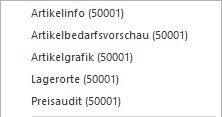
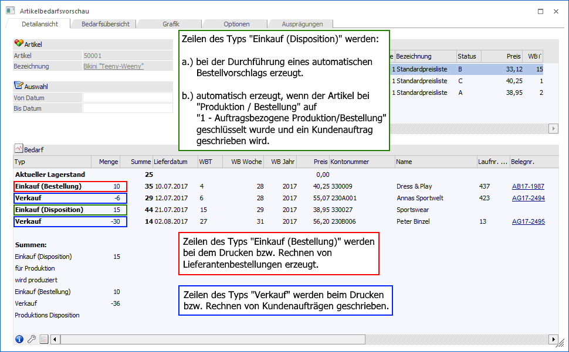
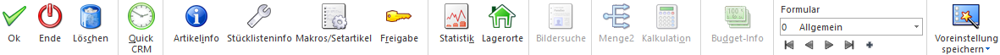

Im Menüpunkt…
1 WinLine FAKT
1 Stammdaten
1 Artikelstammdaten
1 Artikel
… können nach Eingabe einer bereits bestehenden Artikelnummer die Artikelwerte vervollständigt bzw. editiert werden. Vom Hauptfenster aus kann man zu allen untergeordneten Informationsbereichen weiter verzweigen, wie z.B. den Preisen, den Texten oder den Ausprägungen. Wenn die Artikelnummer im Feld "Artikelnummer" eingegeben wird, so gibt es mehrere mögliche Szenarien:
ü Die Artikelnummer ist bereits
vorhanden
Es wird der Artikel mit allen entsprechenden Daten angezeigt.
ü Die Artikelnummer ist noch nicht
vorhanden
Es wird die Neuanlage eines Artikels vorgeschlagen, indem das
Fenster "Artikel - Anlage" geöffnet wird.
ü Die Artikelnummer ist bereits
vorhanden, wird aber von einem anderen Benutzer bearbeitet
Die Audit-Ampel
stellt sich auf Rot und es erscheint eine entsprechende Hinweismeldung. Wird die
Meldung mit "Ja" bestätigt, dann kann eine neue Artikelnummer eingegeben werden.
Bei einer Bestätigung von "Nein" erfolgt automatisch eine erneute Abprüfung, ob
sich der Datensatz noch in Bearbeitung befindet.

Der Artikelstamm ist in mehrere Register unterteilt, welche in den nachfolgenden Kapiteln detailliert beschrieben werden:
ü Register "Stamm"
In dem Register
"Stamm" können die Grundstammdaten des Artikels erfasst werden.
ü Register "Anlage"
Mit Hilfe des
Register "Anlage", in welches bei der Eingabe einer noch nicht existierende
Artikelnummer automatisch gewechselt wird, kann ein neuer Artikel kreiert
werden.
ü Register "Preise"
In dem Register
"Preise" können u.a. die Preise und Sachkonten des Artikels hinterlegt
werden.
ü Register "Lieferanten"
In dem
Register "Lieferanten" können die Lieferanten des Artikels definiert werden.
ü Register "Detailansicht"
In dem
Register "Detailansicht", welches in den Preistabellen über den Tabellenbutton
"Detailansicht" erreichbar ist, können die Preise editiert werden.
ü Register "Lager"
In dem Register
"Lager" können u.a. die Lagereinstellungen und die Daten des automatischen
Einkaufs hinterlegt werden.
ü Register "Text"
In dem Register
"Text" können u.a. die Artikeltexte des Artikels hinterlegt werden.
ü Register "Texteingabe"
Mit Hilfe
des Registers "Texteingabe" kann der Inhalt der 10 RTF-Texte (auch
Artikelnotizen genannt) erfasst werden.
ü Register "Auspr."
Bei Hauptartikel
mit Ausprägung kann in dem Register "Auspr." definiert werden, ob und welche
Ausprägungen angelegt werden sollen.
ü Register "Zusatz"
In dem Register
"Zusatz" können die Zusatzfelder und die Eigenschaften des Artikels hinterlegt
werden.
ü Register "Budget"
In dem Register
"Budget" kann für jeden Artikel ein mengen- und / oder wertmäßiges Budget
erfasst werden.
ü Register "Historie"
In dem Register
"Historie" wird der "Verlauf" des Artikels über die letzten Jahre angezeigt.
rechte Maustaste

Mit Hilfe der rechten Maustaste stehen in allen Registern weitere Informationen zu dem ausgewählten Artikel zur Verfügung.
Ø Artikelinfo
Durch Anwahl des Eintrags "Artikelinfo" wird die "Artikel Info" geöffnet. An dieser Stelle erhält man detaillierte Informationen zu dem angelegten Artikel (z.B. Lagerstand, Lagerwert, Zugänge, Abgänge, letzte Lagerbewegungen, etc.).
Ø Artikelbedarfsvorschau
Über die rechte Maustaste kann jederzeit die Artikelbedarfsvorschau aufgerufen werden. Diese gibt dabei Auskunft über zukünftige Aufträge und Bestellungen (nähere Informationen entnehmen Sie bitte dem Kapitel Artikelbedarfsvorschau).
Beispiel

Ø Artikelgrafik
Bei Anwahl des Eintrags "Artikelgrafik" wird das Bild / die Grafik des Artikels in einem eigenen Fenster dargestellt. Dieses Fenster kann über das Register "Text" (Button "Bild anzeigen") wieder geschlossen werden.
Ø Lagerwerte
Mit Hilfe des Eintrags "Lagerorte" wird das Programm "Artikel - Lagerorte" aufgerufen und die aktuellen Lagerorte des Artikels dargestellt.
Ø Preisaudit
Das Preisaudit zeichnet alle Veränderungen am Preis auf und wird über das "Variablen Audit" (WinLine ADMIN - Audit - Variablen Audit - Tabelle "043 - Preisliste") aktiviert.
Neben dem Auswertungsprogramm "Preisaudit" (WinLine FAKT - Auswertungen - Artikelliste - Preisaudit) ist es auch möglich das Audit über die rechte Maustaste im Artikelstamm aufzurufen. Hierbei wird zwischen allen Einträgen des Artikels (rechte Maustaste irgendwo in den Artikelstamm) und Einträgen eines speziellen Preises (rechte Maustaste auf den Preislisteneintrag) unterschieden.

Durch Anwahl dieses Eintrages wird die Auswertung des Preisaudits gestartet und automatisch auf den "aktuellen" Artikel eingegrenzt.
Steht der Fokus in der Preistabelle (Register "Preise" - Unterregister "Preise" bzw. Register "Lieferanten"), so wird das Preisaudit zusätzlich auf die markierte Preiszeile eingegrenzt.
Buttons

Ø Ok
Durch Anwahl des Buttons "Ok" bzw. der Taste F5 werden die vorgenommenen Änderungen bzw. die Neuanlage abgespeichert.
Hinweis
Durch die Tastenkombination SHIFT + F5 erfolgt eine Zwischenspeicherung des Artikels.
Ø Ende
Bei Anwahl des Buttons "Ende" bzw. der Taste ESC wird der Programmbereich verlassen und alle nicht gespeicherten Änderungen verworfen.
Ø Löschen
Durch Anklicken des "Löschen"-Buttons wird der Artikel gelöscht. Voraussetzung dafür ist, dass für den Artikel keine Lagerbewegungen und keine Belege erfasst wurden.
Ø Quick CRM
Wenn dieser Button angeklickt wird, kann ein CRM-Fall zu dem gerade geöffneten Artikel erfasst werden. Voraussetzung dafür ist:
ü Es muss eine gültige CRM-Lizenz vorhanden sein.
ü Der Benutzer muss ein CRM-Benutzer sein.
ü Es müssen entsprechende CRM-Aktionen bzw. CRM-Workflows mit der Kennzeichnung "QUICK CRM" angelegt sein.
Hinweis
Es werden im WinLine Standard 9 CRM-Aktionen (CRM-Gruppe "100") mitgeliefert.
Ø Artikelinfo
Durch Anwahl des "Info"-Buttons wird die "Artikel Info" geöffnet. An dieser Stelle erhält man detaillierte Informationen zu dem angelegten Artikel (z.B. Lagerstand, Lagerwert, Zugänge, Abgänge, letzte Lagerbewegungen, etc.). Drückt man während der Anwahl des Buttons die SHIFT-Taste, so wird die "Artikelinformation" in der Applikation WinLine INFO geöffnet. Dieser Button ist auch mittels den Shortcuts ALT + i (öffnet die "Artikel Info" in WinLine FAKT) oder SHIFT + ALT + i (öffnet die "Artikelinformation" in WinLine INFO) anwählbar.
Ø Stücklisteninfo
Mit diesem Button wird das Fenster "Makro-Info" geöffnet, in welchem alle Stücklisten angezeigt werden, die den aktuellen Artikel enthalten. Des Weiteren werden im neuen Fenster im Register "Detailliert" alle Artikel aufgelistet, die in der jeweils selektierten Stückliste enthalten sind.
Ø Makros/Setartikel
Mit diesem Button wird ein neues Fenster geöffnet, in dem alle Artikelmakros/ Textbausteine aufgelistet werden, die den aktuell selektierten Artikel enthalten bzw. in diesem Artikel hinterlegt sind. Im Register "Detailinfo" werden alle Artikel aufgelistet, die in einem Makro enthalten sind (für den Wechsel in das Register "Detailinfo" muss zunächst ein Makro angewählt werden). Nähere Informationen hierzu sind dem Kapitel Makro-Info / Stücklisten-Info zu entnehmen.
Ø Freigabe
Durch Anklicken des "Freigabe"-Buttons kann in dem extra Fenster "Freigabe" der Freigabestatus des aktivierten Artikels geändert werden (nähere Informationen entnehmen Sie bitte dem Kapitel "Freigabe" bzw. dem WinLine START - Handbuch).
Ø Statistik
Durch Anklicken des Buttons "Statistik" erhält man eine Übersicht über die Verkaufszahlen des Artikels.
Hinweis
Über das geöffnete Fenster "Statistik Überblick" kann die Auswertung geändert werden (z.B. zum Darstellen der Einkaufszahlen).

Ø Lagerorte
Bei Anwahl des Buttons "Lagerorte" wird das Programm "Artikel - Lagerorte" aufgerufen und die aktuellen Lagerorte des Artikels dargestellt.
Ø Bildersuche (nur im Register "Text" anwählbar)
Mit Hilfe dieses Buttons kann ein Bild für den Artikel gesucht, ausgeschnitten und zugeordnet werden. Hierbei wird zunächst über ein Menü die Quelle des Bilds definiert. Folgende Varianten stehen zur Verfügung:
ü Bildersuche
Es wird das
Programm "Bildersuche" geöffnet.
ü Bildersuche - WinLine
Es wird
das Programm "Bilder in Datenbanken" geöffnet, über welches eine Grafik
ausgewählt werden kann.
ü Bildersuche - Datenträger
Es
wird der Öffnen-Dialog von Windows geöffnet, über welchen eine Grafik ausgewählt
werden kann.
Ø Menge2 (nur im Register "Preise" anwählbar)
Wenn ein Artikel in 2 Mengen geführt wird (z.B. wird der Artikel in Karton eingekauft und in Flaschen verkauft), dann kann durch Anwahl dieses Buttons das Fenster "Lagerführung n 2 Mengen" geöffnet werden. In diesem erfolgt die Definition der beiden Mengen.
Achtung
Die Definition der 2. Menge kann nur erfolgen, wenn der Artikel noch nicht bebucht wurde.
Ø Kalkulation (nur im Register "Preise" anwählbar)
Mit dem Button "Kalkulation" wird das Fenster "Kalkulation" geöffnet, in welchem auf Basis eines Kalkulationsschemas der Verkaufspreis eines Artikels berechnet werden kann.
Ø Budget-Info (nur im Register "Budget" anwählbar)
Durch Anwahl des Buttons "Budget-Info" wird die Auswertung "Artikel-Budget" am Bildschirm ausgegeben.
Ø Formular
Über die Auswahlbox "Formular" kann gewählt werden, in welcher Form der Stammdatensatz bearbeitet werden soll. Wenn die Option "0 - Allgemein" gewählt wird, dann wird wieder in die "Normalansicht" mit allen Eingabefeldern zurückgeschalten.
Hinweis
Die Definition der Formulare für die individuelle Gestaltung erfolgt im Programm WinLine START über den Menüpunkt "Vorlagen - Vorlagen Anlage - Individuelle Formulare".
Ø VCR-Buttons
Über die so genannten VCR-Buttons, welche in jedem Register zur Verfügung stehen, kann durch Mausklick zwischen den Datensätzen geblättert werden.
ü  Damit kann der
erste Datensatz angesprochen werden.
Damit kann der
erste Datensatz angesprochen werden.
ü  Damit kann der
vorherige Datensatz angesprochen werden.
Damit kann der
vorherige Datensatz angesprochen werden.
ü  Damit kann der
nächste Datensatz angesprochen werden.
Damit kann der
nächste Datensatz angesprochen werden.
ü  Damit kann der
letzte Datensatz angesprochen werden.
Damit kann der
letzte Datensatz angesprochen werden.
ü  Damit wird die
nächste freie Nummer für die Neuanlage gesucht (nur im Register "Stamm").
Damit wird die
nächste freie Nummer für die Neuanlage gesucht (nur im Register "Stamm").
Hinweis
Beim Blättern zwischen den Artikel-Datensätzen werden Ausprägungen standardmäßig "überblättert", d.h. es wird von einem Hauptartikel zum nächsten geblättert. Sollten auch Ausprägungen berücksichtigt werden, so muss beim Blättern zusätzlich die STRG-Taste gedrückt werden.
Ø Voreinstellung speichern
Durch Anwahl dieses Buttons erfolgt eine benutzerspezifische Speicherung aller im Fenster getätigten Einstellungen. Diese sogenannten "Voreinstellungen" können jederzeit wieder abgerufen werden und ermöglichen dadurch ein schnelleres und zielorientierteres Arbeiten (nähere Informationen entnehmen Sie bitte dem Kapitel "Die Voreinstellungen").